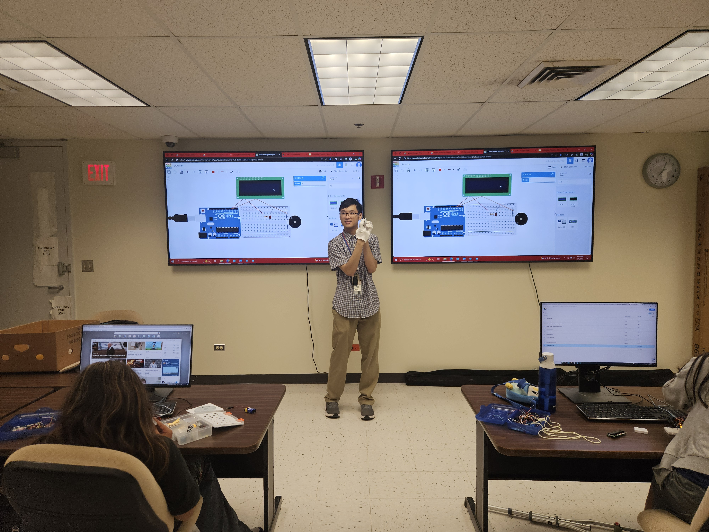

My Summer Institute Website!
The first thing that we did in Lolo Uila that I found intreasting was when we made a PB&J sandwitch by giving our kumu specfic directions to make it. This activity represented lolo uila because it taught us to give specfic instrutions when coding or asking ai to make sure your code or ai does the right things.
The second thing we did in Lolo Uila is that we did is that we learned how to wire the adruino code. This taught me how to wire adruino with things like lcd screens and LED lights. This relates to lolo uila or computer science because wiring and coding these programs represent the basic computer science.
In residential, the thing that we did was a scavenger hunt. This was fun to me because I liked figuring out the clues for each location and using the map to guide us.
The final thing we did is a news paper. This was kind of fun because designing and making the outfits where fun but being the model was not. I still enjoyed it though because it was fun seeing other peoples websites
